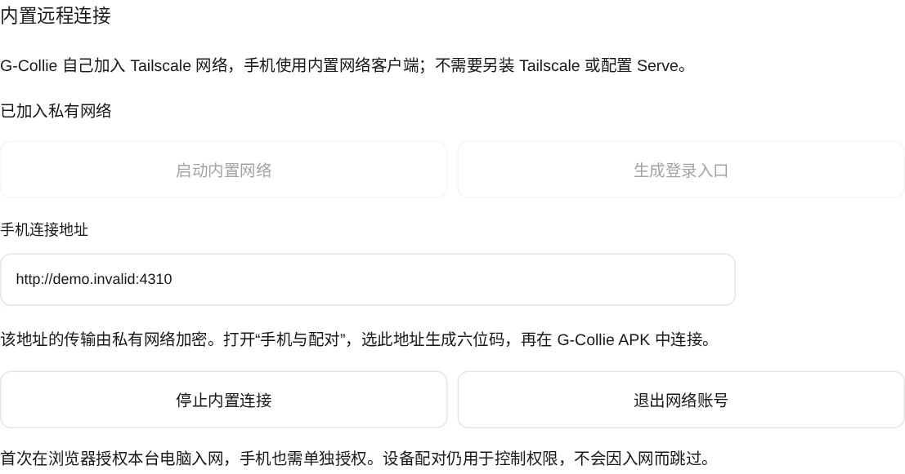

让两端加入同一私网
电脑 打开「服务端管理 → 网络与服务 → 内置远程连接」。启动内置网络，在浏览器完成 Tailscale 授权。
手机 从 App 右上角「⋮ → 远程连接」加入同一个有访问权限的私网。两端显示已加入后，开始配对。
查看电脑端入网界面


用手机或另一台电脑的浏览器接入执行电脑，从原会话继续工作。任务仍在执行电脑上运行。
在执行电脑上用日常账号登录助手并启动 G-Collie。手机接入请安装 Android App；电脑接入请看浏览器配对步骤 ↓。
电脑 打开「服务端管理 → 网络与服务 → 内置远程连接」。启动内置网络，在浏览器完成 Tailscale 授权。
手机 从 App 右上角「⋮ → 远程连接」加入同一个有访问权限的私网。两端显示已加入后，开始配对。

电脑 进入「服务端管理 → 手机配对与设备」，选择手机可访问的私网地址，点击「生成配对二维码」。
手机 在「连接电脑」填写电脑给出的完整私网地址（含协议和端口）及六位码，点「配对并连接」。也可粘贴完整配对链接。

手机 首次配对后，可在本机资料页点「暂时跳过」或「进入工作台」。核对电脑名称，从「最近使用」打开任务，查看原有记录。
支持继续操作的会话可以接着发消息。能否追加要求或处理审批，取决于助手来源、设备权限和当前会话状态。
手机已用过的配对码需要重新生成。在另一台电脑输入 127.0.0.1 会打开它自己，请使用执行电脑提供的可达地址。